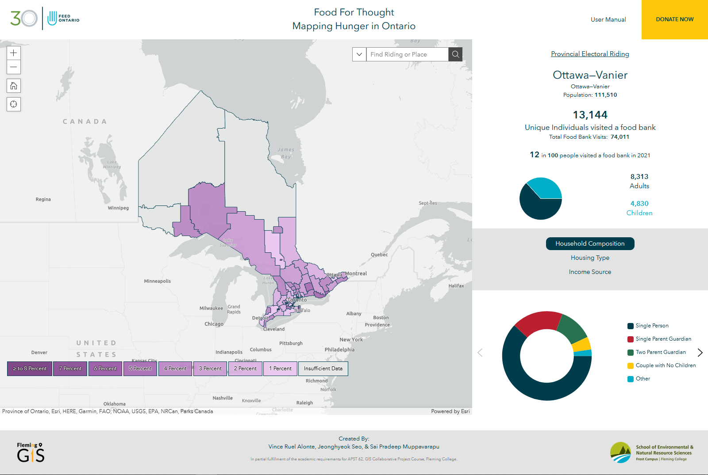

There are five stages to our methodology. The first four stages develop the final web application, while stage 5 deals with Feed Ontario's ArcGIS online account.
The reference table creation prepares three tables used in this stage's second part.
1. Postal Code Conversion File (PCCF) Subset for Ontario is created using Microsoft Access with the where clause containing the provincial code. It also contains the single link indicator that determines the representative point for each postal code and the retirement date that selects all active postal codes.
SQL code to create the PCCF subset for Ontario
2. The Forward Sortation Area (FSA) and Electoral Riding Percentage reference table used the tabulate intersection tool from ArcGIS Pro to calculate the area percentage of an FSA within an electoral riding.
Model to tabulate the area percentage of each forward sortation area within an electoral riding
3. The Electoral Riding Centroid reference table contains the centroid coordinate of each of Ontario's 124 provincial electoral ridings.
Model to create the table containing the x and y coordinates of each provincial electoral riding for Ontario
The second part for this stage uses the reference tables (from part 1) to assign coordinates to each valid entry. The postal codes within each entry can contain errors since they are manually entered. All letter O were replaced with zeros to recover some of the data since all Canadian postal codes do not contain the letter O. It was then joined the PCCF subset to each table to assign them a location.
Entries not successfully joined were truncated to the first three characters of the Postal code, the FSA. This was then joined and multiplied with the electoral riding and FSA percentage reference table. Then location attributes were assigned using the electoral riding centroids. The image below outlines the entire process using FME workbench. The process was applied three times: 1) Unique individual visits table, 2) Duplicate (Multiple) visits table, and 3) Household composition, housing type, and income source categories.
FME workspace to assign X and Y coordinates for household composition, housing type, and income source
The output from Stage 1 (Data Pre-Processing and Coordinate assignment Assignment) were spatially located using the XY table to point geoprocessing tool. A spatial join was then used to aggregate the points into their respective provincial electoral ridings. A final provincial electoral ridings polygon feature class was also created containing all the columns from the different tables. Two additional fields were added: population and food bank use per capita.
Model to locate and spatially join each point to an Electoral riding with the attribute table also exported as an excel file

Food Bank Use per Capita Equation
The third stage is the creation of the web map. Feed Ontario identified three ridings that should be labeled as Insufficient Food Bank Use Data since they lack a significant presence there. Five text fields essential for the experience builder app were added: Unique Individuals Text, Food Bank Use Per Capita Text, Unique Children Text, Unique Adults, and Duplicated Individuals Text. The table below shows the three ridings containing the different text attributes. The unique individuals is shown in the web app first. Therefore, it contains the "Insufficient Food Bank Use Data" Text. Food bank use per capita is the next prominent text, then the other 3. A thousand comma separator was added to the numbers too.
Part of the attribute table containg the 3 ridings with the different text attributes
Stage 3 is also a checkpoint before publishing as a web layer, with an initial symbology applied in ArcGIS Pro. Once published into ArcGIS Online, it is loaded into Map viewer and the pop-up, basemap, labels, symbology, and legend had their formatting finalized.
Web map used in ArcGIS Experience Builder
Stage 4 creates the web application in ArcGIS Experience Builder. It also creates the interactions and final visualization for the web map. The pie chart compares food bank visits between individual adults and children. Another three pie charts are used to visualize the socioeconomic make-up of food bank visitors. The dynamic text changes with each riding selected, while the search bar allows users to look for a riding or an address. We also used the view navigation widget, which is the tabs to select a view or a section. The section contains the three pie charts that the user can flip through. The buttons on the header are moved into the body as the screen size decreases.
The web map within the application also has the following tools and widgets. The home button zooms back to the initial map extents. The locate button allows the user to locate themselves on the map. The plus and minus symbol zooms the map in and out. The legend adds context to the symbology applied on the map. The three images below are the different screen size layouts (Large, Medium, Small).
Large Screen Devices (Desktop View)
Medium Screen Devices (Tablet View)
Small Screen Devices (Mobile View)
Stage 5 aims to remove and download unnecessary items stored in ArcGIS Online. Comma-separated values (.csv) files, file geodatabase (.gdb), excel files (.xlsx), and shapefiles (.shp) were downloaded. They will be deleted to save some credits since these file types are not readily usable within ArcGIS Online. Additionally, all the downloaded files will be returned as a downloadable link.